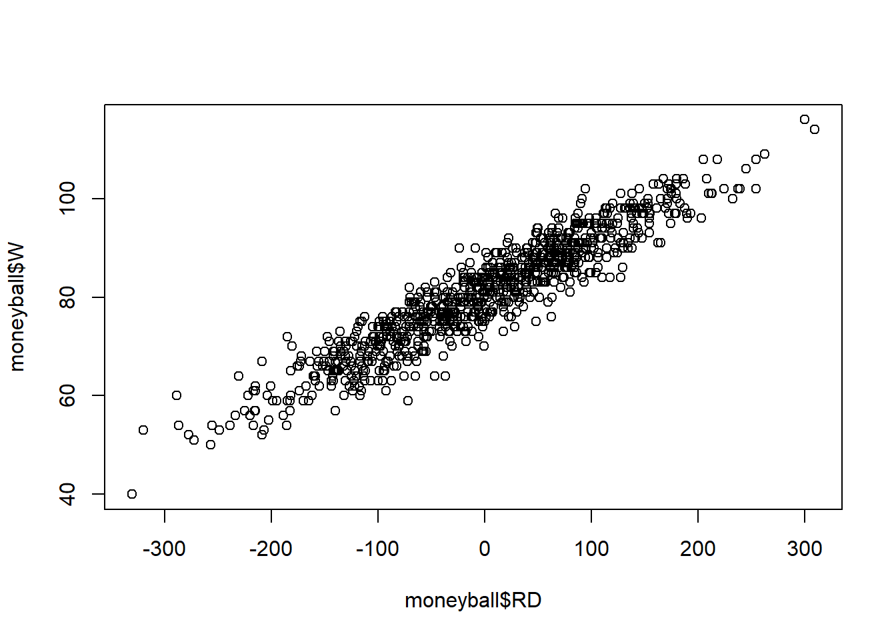
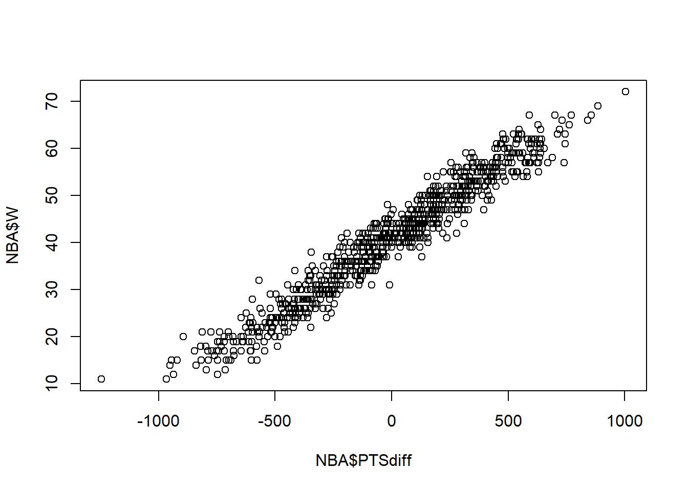
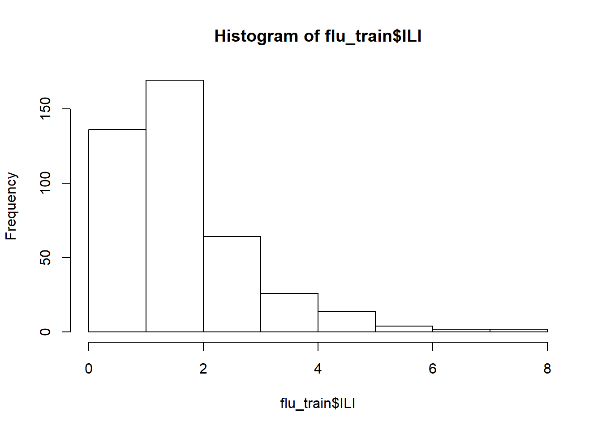
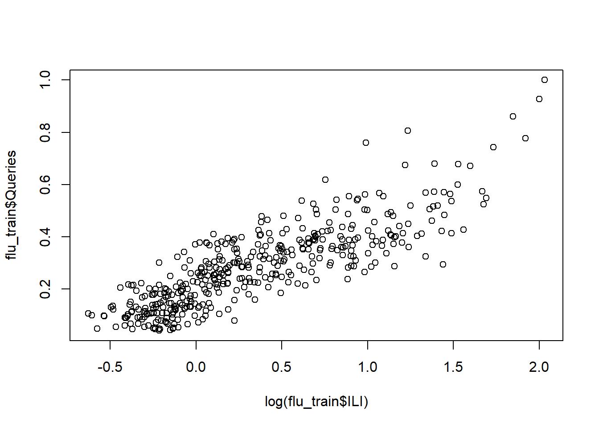
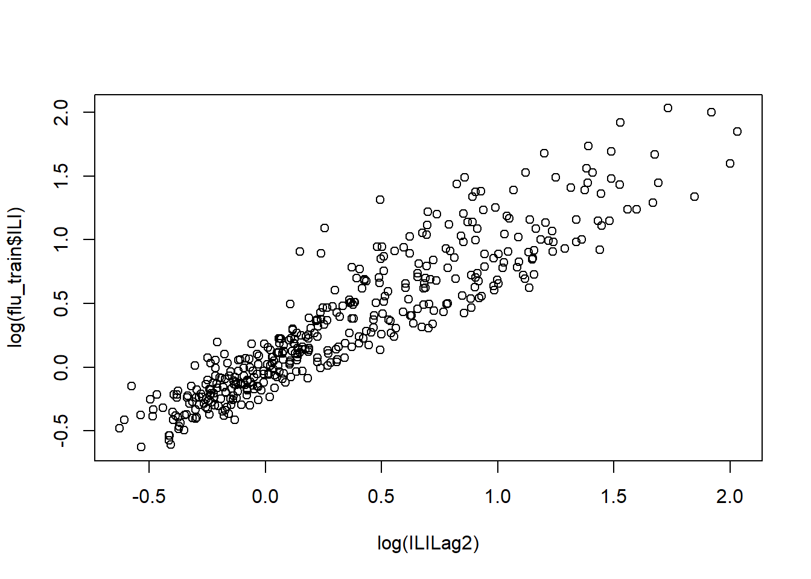

Unit 3 Linear Regression
3.1 Introduction to Linear Regression
## 'data.frame': 25 obs. of 7 variables:
## $ Year : int 1952 1953 1955 1957 1958 1959 1960 1961 1962 1963 ...
## $ Price : num 7.5 8.04 7.69 6.98 6.78 ...
## $ WinterRain : int 600 690 502 420 582 485 763 830 697 608 ...
## $ AGST : num 17.1 16.7 17.1 16.1 16.4 ...
## $ HarvestRain: int 160 80 130 110 187 187 290 38 52 155 ...
## $ Age : int 31 30 28 26 25 24 23 22 21 20 ...
## $ FrancePop : num 43184 43495 44218 45152 45654 ...3.1.1 1 variable Linear Regression Model - Predicting Wine Quality
model1 <- lm(Price ~AGST, data=wine)#linear_model = lm(dependent_variable ~ independent_variable)
summary(model1)##
## Call:
## lm(formula = Price ~ AGST, data = wine)
##
## Residuals:
## Min 1Q Median 3Q Max
## -0.78450 -0.23882 -0.03727 0.38992 0.90318
##
## Coefficients:
## Estimate Std. Error t value Pr(>|t|)
...## [1] 5.7348753.1.2 Multiple Linear Regression Model
##
## Call:
## lm(formula = Price ~ AGST + HarvestRain, data = wine)
##
## Residuals:
## Min 1Q Median 3Q Max
## -0.88321 -0.19600 0.06178 0.15379 0.59722
##
## Coefficients:
## Estimate Std. Error t value Pr(>|t|)
...## [1] 2.970373##
## Call:
## lm(formula = Price ~ AGST + HarvestRain + WinterRain + Age +
## FrancePop, data = wine)
##
## Residuals:
## Min 1Q Median 3Q Max
## -0.48179 -0.24662 -0.00726 0.22012 0.51987
##
## Coefficients:
...## [1] 1.732113Estimate - Estimate of beta value for model
Multiple R-squared always increases
Adjusted R-squared decreases if an unhelpful independent variable is added to model
t-value = Estimate/Std. Error
the larger the absolute t-value the more likely the coefficient is to be significant
Last column gives a measure of how plausible (probability) it is that the coefficient is 0
Age and France population are insignificant in model.
##
## Call:
## lm(formula = Price ~ AGST + HarvestRain + WinterRain + Age, data = wine)
##
## Residuals:
## Min 1Q Median 3Q Max
## -0.45470 -0.24273 0.00752 0.19773 0.53637
##
## Coefficients:
## Estimate Std. Error t value Pr(>|t|)
...3.1.3 Correlation and Muticollinearity
## [1] 0.1366505## Year Price WinterRain AGST HarvestRain
## Year 1.00000000 -0.4477679 0.016970024 -0.24691585 0.02800907
## Price -0.44776786 1.0000000 0.136650547 0.65956286 -0.56332190
## WinterRain 0.01697002 0.1366505 1.000000000 -0.32109061 -0.27544085
## AGST -0.24691585 0.6595629 -0.321090611 1.00000000 -0.06449593
## HarvestRain 0.02800907 -0.5633219 -0.275440854 -0.06449593 1.00000000
## Age -1.00000000 0.4477679 -0.016970024 0.24691585 -0.02800907
## FrancePop 0.99448510 -0.4668616 -0.001621627 -0.25916227 0.04126439
## Age FrancePop
## Year -1.00000000 0.994485097
...multicollinearity - When 2 independent variables are highly correlated. Only remove 1 collinear variable at a time.
3.1.4 Making Predictions
Out of sample accuracy - Accuracy of model on new test data
wineTest <-read.csv("week2/wine_test.csv")
predictTest = predict(model4, newdata=wineTest)
predictTest## 1 2
## 6.768925 6.684910SSE = sum((wineTest$Price - predictTest)^2)
SST = sum((wineTest$Price - mean(wine$Price))^2)
1- SSE/SST #R-squared## [1] 0.79442783.1.4.1 The Story of Moneyball
## 'data.frame': 1232 obs. of 15 variables:
## $ Team : Factor w/ 39 levels "ANA","ARI","ATL",..: 2 3 4 5 7 8 9 10 11 12 ...
## $ League : Factor w/ 2 levels "AL","NL": 2 2 1 1 2 1 2 1 2 1 ...
## $ Year : int 2012 2012 2012 2012 2012 2012 2012 2012 2012 2012 ...
## $ RS : int 734 700 712 734 613 748 669 667 758 726 ...
## $ RA : int 688 600 705 806 759 676 588 845 890 670 ...
## $ W : int 81 94 93 69 61 85 97 68 64 88 ...
## $ OBP : num 0.328 0.32 0.311 0.315 0.302 0.318 0.315 0.324 0.33 0.335 ...
## $ SLG : num 0.418 0.389 0.417 0.415 0.378 0.422 0.411 0.381 0.436 0.422 ...
## $ BA : num 0.259 0.247 0.247 0.26 0.24 0.255 0.251 0.251 0.274 0.268 ...
...## 'data.frame': 902 obs. of 15 variables:
## $ Team : Factor w/ 39 levels "ANA","ARI","ATL",..: 1 2 3 4 5 7 8 9 10 11 ...
## $ League : Factor w/ 2 levels "AL","NL": 1 2 2 1 1 2 1 2 1 2 ...
## $ Year : int 2001 2001 2001 2001 2001 2001 2001 2001 2001 2001 ...
## $ RS : int 691 818 729 687 772 777 798 735 897 923 ...
## $ RA : int 730 677 643 829 745 701 795 850 821 906 ...
## $ W : int 75 92 88 63 82 88 83 66 91 73 ...
## $ OBP : num 0.327 0.341 0.324 0.319 0.334 0.336 0.334 0.324 0.35 0.354 ...
## $ SLG : num 0.405 0.442 0.412 0.38 0.439 0.43 0.451 0.419 0.458 0.483 ...
## $ BA : num 0.261 0.267 0.26 0.248 0.266 0.261 0.268 0.262 0.278 0.292 ...
...moneyball$RD <- moneyball$RS - moneyball$RA # Difference between Rums Scored and runs against
str(moneyball)## 'data.frame': 902 obs. of 16 variables:
## $ Team : Factor w/ 39 levels "ANA","ARI","ATL",..: 1 2 3 4 5 7 8 9 10 11 ...
## $ League : Factor w/ 2 levels "AL","NL": 1 2 2 1 1 2 1 2 1 2 ...
## $ Year : int 2001 2001 2001 2001 2001 2001 2001 2001 2001 2001 ...
## $ RS : int 691 818 729 687 772 777 798 735 897 923 ...
## $ RA : int 730 677 643 829 745 701 795 850 821 906 ...
## $ W : int 75 92 88 63 82 88 83 66 91 73 ...
## $ OBP : num 0.327 0.341 0.324 0.319 0.334 0.336 0.334 0.324 0.35 0.354 ...
## $ SLG : num 0.405 0.442 0.412 0.38 0.439 0.43 0.451 0.419 0.458 0.483 ...
## $ BA : num 0.261 0.267 0.26 0.248 0.266 0.261 0.268 0.262 0.278 0.292 ...
...
##
## Call:
## lm(formula = W ~ RD, data = moneyball)
##
## Residuals:
## Min 1Q Median 3Q Max
## -14.2662 -2.6509 0.1234 2.9364 11.6570
##
## Coefficients:
## Estimate Std. Error t value Pr(>|t|)
...3.1.4.2 Predicting Runs
RunsReg <- lm(RS ~OBP + SLG + BA, data=moneyball) #On Base percentage, Slugging Percentage and Batting Average
summary(RunsReg)##
## Call:
## lm(formula = RS ~ OBP + SLG + BA, data = moneyball)
##
## Residuals:
## Min 1Q Median 3Q Max
## -70.941 -17.247 -0.621 16.754 90.998
##
## Coefficients:
## Estimate Std. Error t value Pr(>|t|)
...##
## Call:
## lm(formula = RS ~ OBP + SLG, data = moneyball)
##
## Residuals:
## Min 1Q Median 3Q Max
## -70.838 -17.174 -1.108 16.770 90.036
##
## Coefficients:
## Estimate Std. Error t value Pr(>|t|)
...3.2 Recitation 2 - MOneyball in the NBA
## 'data.frame': 835 obs. of 20 variables:
## $ SeasonEnd: int 1980 1980 1980 1980 1980 1980 1980 1980 1980 1980 ...
## $ Team : Factor w/ 37 levels "Atlanta Hawks",..: 1 2 5 6 8 9 10 11 12 13 ...
## $ Playoffs : int 1 1 0 0 0 0 0 1 0 1 ...
## $ W : int 50 61 30 37 30 16 24 41 37 47 ...
## $ PTS : int 8573 9303 8813 9360 8878 8933 8493 9084 9119 8860 ...
## $ oppPTS : int 8334 8664 9035 9332 9240 9609 8853 9070 9176 8603 ...
## $ FG : int 3261 3617 3362 3811 3462 3643 3527 3599 3639 3582 ...
## $ FGA : int 7027 7387 6943 8041 7470 7596 7318 7496 7689 7489 ...
## $ X2P : int 3248 3455 3292 3775 3379 3586 3500 3495 3551 3557 ...
...##
## 0 1
## 11 2 0
## 12 2 0
## 13 2 0
## 14 2 0
## 15 10 0
## 16 2 0
## 17 11 0
## 18 5 0
...
##
## Call:
## lm(formula = W ~ PTSdiff, data = NBA)
##
## Residuals:
## Min 1Q Median 3Q Max
## -9.7393 -2.1018 -0.0672 2.0265 10.6026
##
## Coefficients:
## Estimate Std. Error t value Pr(>|t|)
...Regression Equation: W = 41+ 0.0326*PTSdiff
3.2.1 Regression model using more than just Wins variable
PointsReg <- lm(PTS ~ X2PA + X3PA + FTA + AST + ORB +DRB +TOV +STL + BLK, data = NBA)
summary(PointsReg)##
## Call:
## lm(formula = PTS ~ X2PA + X3PA + FTA + AST + ORB + DRB + TOV +
## STL + BLK, data = NBA)
##
## Residuals:
## Min 1Q Median 3Q Max
## -527.40 -119.83 7.83 120.67 564.71
##
## Coefficients:
...## 1 2 3 4 5 6
## 38.5722713 142.8720040 -92.8957180 -8.3913473 -258.4705615 171.4608325
## 7 8 9 10 11 12
## 150.4081623 169.3811429 40.7756197 -75.3256614 444.9088743 94.3864704
## 13 14 15 16 17 18
## -205.6809050 113.5969040 64.1993998 -76.5711999 249.4888007 28.0363236
## 19 20 21 22 23 24
## 329.4487991 96.3248342 349.2067913 -284.3765225 196.1611379 198.2493104
## 25 26 27 28 29 30
## 445.4100295 93.8946072 -316.2962802 -166.1909668 -5.8446359 211.2301997
...## [1] 28394314Remove TOV from model since it has highest p-value
PointsReg2 <- lm(PTS ~ X2PA + X3PA + FTA + AST + ORB +DRB +STL + BLK, data = NBA)
summary(PointsReg2)##
## Call:
## lm(formula = PTS ~ X2PA + X3PA + FTA + AST + ORB + DRB + STL +
## BLK, data = NBA)
##
## Residuals:
## Min 1Q Median 3Q Max
## -526.79 -121.09 6.37 120.74 565.94
##
## Coefficients:
...#Remove DRB
PointsReg3 <- lm(PTS ~ X2PA + X3PA + FTA + AST + ORB +STL + BLK, data = NBA)
summary(PointsReg3)##
## Call:
## lm(formula = PTS ~ X2PA + X3PA + FTA + AST + ORB + STL + BLK,
## data = NBA)
##
## Residuals:
## Min 1Q Median 3Q Max
## -523.79 -121.64 6.07 120.81 573.64
##
## Coefficients:
...#Remove Blocks
PointsReg4 <- lm(PTS ~ X2PA + X3PA + FTA + AST + ORB +STL, data = NBA)
summary(PointsReg4)##
## Call:
## lm(formula = PTS ~ X2PA + X3PA + FTA + AST + ORB + STL, data = NBA)
##
## Residuals:
## Min 1Q Median 3Q Max
## -523.33 -122.02 6.93 120.68 568.26
##
## Coefficients:
## Estimate Std. Error t value Pr(>|t|)
...## [1] 184.493R-squared remains virtually unchanged
3.2.2 Making Predictions
## X2PA X3PA FTA AST ORB STL
## X2PA 1.0000000 -0.9232442 0.5237567 0.6777075 0.7656147 0.4900862
## X3PA -0.9232442 1.0000000 -0.5377829 -0.5927831 -0.6491727 -0.4090916
## FTA 0.5237567 -0.5377829 1.0000000 0.4279722 0.4745584 0.3700552
## AST 0.6777075 -0.5927831 0.4279722 1.0000000 0.4067656 0.4431383
## ORB 0.7656147 -0.6491727 0.4745584 0.4067656 1.0000000 0.4929415
## STL 0.4900862 -0.4090916 0.3700552 0.4431383 0.4929415 1.0000000NBA_test <- read.csv("week2/NBA_test.csv")
PointsPredictions <- predict(PointsReg4, newdata = NBA_test)
PointsPredictions## 1 2 3 4 5 6 7 8
## 8086.446 7764.143 7965.348 7784.034 8004.349 8247.427 8601.200 7818.223
## 9 10 11 12 13 14 15 16
## 8127.482 8619.523 8072.525 8535.753 7527.693 8022.760 8283.675 8159.595
## 17 18 19 20 21 22 23 24
## 7507.084 7851.878 8197.481 7766.547 7727.529 7942.718 7947.870 8144.708
## 25 26 27 28
## 8335.840 8006.388 7975.788 7873.656SSE <- sum((PointsPredictions - NBA_test$PTS)^2)
SST <- sum((mean(NBA$PTS)-NBA_test$PTS)^2)
Rsquared <- 1 - SSE/SST
Rsquared## [1] 0.8127142## [1] 196.37233.3 Assignment
3.3.1 Part 1 - Climate Change
## Year Month MEI CO2
## Min. :1983 Min. : 1.000 Min. :-1.6350 Min. :340.2
## 1st Qu.:1989 1st Qu.: 4.000 1st Qu.:-0.3987 1st Qu.:353.0
## Median :1996 Median : 7.000 Median : 0.2375 Median :361.7
## Mean :1996 Mean : 6.552 Mean : 0.2756 Mean :363.2
## 3rd Qu.:2002 3rd Qu.:10.000 3rd Qu.: 0.8305 3rd Qu.:373.5
## Max. :2008 Max. :12.000 Max. : 3.0010 Max. :388.5
## CH4 N2O CFC.11 CFC.12 TSI
## Min. :1630 Min. :303.7 Min. :191.3 Min. :350.1 Min. :1365
## 1st Qu.:1722 1st Qu.:308.1 1st Qu.:246.3 1st Qu.:472.4 1st Qu.:1366
...3.3.1.1 Problem 1
Split data into training dataset and testing dataset by year 2006. Training - Year <= 2006, and Testing >2006
training_set <- subset(climate_change, Year <=2006)
testing_set <- subset(climate_change, Year > 2006)
summary(training_set)## Year Month MEI CO2
## Min. :1983 Min. : 1.000 Min. :-1.5860 Min. :340.2
## 1st Qu.:1989 1st Qu.: 4.000 1st Qu.:-0.3230 1st Qu.:352.3
## Median :1995 Median : 7.000 Median : 0.3085 Median :359.9
## Mean :1995 Mean : 6.556 Mean : 0.3419 Mean :361.4
## 3rd Qu.:2001 3rd Qu.:10.000 3rd Qu.: 0.8980 3rd Qu.:370.6
## Max. :2006 Max. :12.000 Max. : 3.0010 Max. :385.0
## CH4 N2O CFC.11 CFC.12 TSI
## Min. :1630 Min. :303.7 Min. :191.3 Min. :350.1 Min. :1365
## 1st Qu.:1716 1st Qu.:307.7 1st Qu.:249.6 1st Qu.:462.5 1st Qu.:1366
...climate_model <- lm(Temp ~ MEI +CO2 + CH4 + N2O + CFC.11 + CFC.12 + TSI + Aerosols, data= training_set)
summary(climate_model)##
## Call:
## lm(formula = Temp ~ MEI + CO2 + CH4 + N2O + CFC.11 + CFC.12 +
## TSI + Aerosols, data = training_set)
##
## Residuals:
## Min 1Q Median 3Q Max
## -0.25888 -0.05913 -0.00082 0.05649 0.32433
##
## Coefficients:
...## Year Month MEI CO2 CH4
## Year 1.00000000 -0.0279419602 -0.0369876842 0.98274939 0.91565945
## Month -0.02794196 1.0000000000 0.0008846905 -0.10673246 0.01856866
## MEI -0.03698768 0.0008846905 1.0000000000 -0.04114717 -0.03341930
## CO2 0.98274939 -0.1067324607 -0.0411471651 1.00000000 0.87727963
## CH4 0.91565945 0.0185686624 -0.0334193014 0.87727963 1.00000000
## N2O 0.99384523 0.0136315303 -0.0508197755 0.97671982 0.89983864
## CFC.11 0.56910643 -0.0131112236 0.0690004387 0.51405975 0.77990402
## CFC.12 0.89701166 0.0006751102 0.0082855443 0.85268963 0.96361625
## TSI 0.17030201 -0.0346061935 -0.1544919227 0.17742893 0.24552844
...## [1] 0.09024652## [1] 284## [1] 1997##
## Call:
## lm(formula = Temp ~ MEI + N2O + TSI + Aerosols, data = training_set)
##
## Residuals:
## Min 1Q Median 3Q Max
## -0.27916 -0.05975 -0.00595 0.05672 0.34195
##
## Coefficients:
## Estimate Std. Error t value Pr(>|t|)
...## Start: AIC=-1348.16
## Temp ~ MEI + CO2 + CH4 + N2O + CFC.11 + CFC.12 + TSI + Aerosols
##
## Df Sum of Sq RSS AIC
## - CH4 1 0.00049 2.3135 -1350.1
## <none> 2.3130 -1348.2
## - N2O 1 0.03132 2.3443 -1346.3
## - CO2 1 0.06719 2.3802 -1342.0
## - CFC.12 1 0.11874 2.4318 -1335.9
## - CFC.11 1 0.13986 2.4529 -1333.5
...##
## Call:
## lm(formula = Temp ~ MEI + CO2 + N2O + CFC.11 + CFC.12 + TSI +
## Aerosols, data = training_set)
##
## Residuals:
## Min 1Q Median 3Q Max
## -0.25770 -0.05994 -0.00104 0.05588 0.32203
##
## Coefficients:
...3.3.2 Part 2 - Detecting Flu Epidemics
3.3.2.1 Problem 1
climate_regression_variables <- climate_change[c("MEI", "CO2", "N2O", "CFC.11", "CFC.12", "TSI", "Aerosols")]
testing_set$predicted_temp <- predict(step_model, newdata = testing_set)
summary(testing_set)## Year Month MEI CO2
## Min. :2007 Min. : 1.00 Min. :-1.6350 Min. :380.9
## 1st Qu.:2007 1st Qu.: 3.75 1st Qu.:-1.0437 1st Qu.:383.1
## Median :2008 Median : 6.50 Median :-0.5305 Median :384.5
## Mean :2008 Mean : 6.50 Mean :-0.5098 Mean :384.7
## 3rd Qu.:2008 3rd Qu.: 9.25 3rd Qu.:-0.0360 3rd Qu.:386.1
## Max. :2008 Max. :12.00 Max. : 0.9740 Max. :388.5
## CH4 N2O CFC.11 CFC.12 TSI
## Min. :1772 Min. :320.3 Min. :244.1 Min. :534.9 Min. :1366
## 1st Qu.:1792 1st Qu.:320.6 1st Qu.:244.6 1st Qu.:535.1 1st Qu.:1366
...SSE_test<- sum((testing_set$predicted_temp - testing_set$Temp)^2)
SST_test <- sum((mean(training_set$Temp)-testing_set$Temp)^2)
Rsquared_test <- 1- SSE_test/SST_test
Rsquared_test## [1] 0.62860513.3.2.2 Problem 2 - Reading test scores
pisa2009train <- read.csv("week2/pisa2009train.csv")
pisa2009test <- read.csv("week2/pisa2009test.csv")
nrow(pisa2009train)## [1] 3663## grade male raceeth preschool
## Min. : 8.00 Min. :0.0000 White :2015 Min. :0.0000
## 1st Qu.:10.00 1st Qu.:0.0000 Hispanic : 834 1st Qu.:0.0000
## Median :10.00 Median :1.0000 Black : 444 Median :1.0000
## Mean :10.09 Mean :0.5111 Asian : 143 Mean :0.7228
## 3rd Qu.:10.00 3rd Qu.:1.0000 More than one race: 124 3rd Qu.:1.0000
## Max. :12.00 Max. :1.0000 (Other) : 68 Max. :1.0000
## NA's : 35 NA's :56
## expectBachelors motherHS motherBachelors motherWork
## Min. :0.0000 Min. :0.00 Min. :0.0000 Min. :0.0000
...## 'data.frame': 3663 obs. of 24 variables:
## $ grade : int 11 11 9 10 10 10 10 10 9 10 ...
## $ male : int 1 1 1 0 1 1 0 0 0 1 ...
## $ raceeth : Factor w/ 7 levels "American Indian/Alaska Native",..: NA 7 7 3 4 3 2 7 7 5 ...
## $ preschool : int NA 0 1 1 1 1 0 1 1 1 ...
## $ expectBachelors : int 0 0 1 1 0 1 1 1 0 1 ...
## $ motherHS : int NA 1 1 0 1 NA 1 1 1 1 ...
## $ motherBachelors : int NA 1 1 0 0 NA 0 0 NA 1 ...
## $ motherWork : int 1 1 1 1 1 1 1 0 1 1 ...
## $ fatherHS : int NA 1 1 1 1 1 NA 1 0 0 ...
...## 0 1
## 512.9406 483.5325Remove observations with missing data
## [1] 2414#Set "white" as reference level for factor variable
pisaTrain$raceeth = relevel(pisaTrain$raceeth, "White")
pisaTest$raceeth = relevel(pisaTest$raceeth, "White")
str(pisaTrain)## 'data.frame': 2414 obs. of 24 variables:
## $ grade : int 11 10 10 10 10 10 10 10 11 9 ...
## $ male : int 1 0 1 0 1 0 0 0 1 1 ...
## $ raceeth : Factor w/ 7 levels "White","American Indian/Alaska Native",..: 1 4 5 1 6 5 1 5 1 1 ...
## $ preschool : int 0 1 1 1 1 1 1 1 1 1 ...
## $ expectBachelors : int 0 1 0 1 1 1 1 0 1 1 ...
## $ motherHS : int 1 0 1 1 1 1 1 0 1 1 ...
## $ motherBachelors : int 1 0 0 0 1 0 0 0 0 1 ...
## $ motherWork : int 1 1 1 0 1 1 1 0 0 1 ...
## $ fatherHS : int 1 1 1 1 0 1 1 0 1 1 ...
...Build Model
score_model <- lm(readingScore ~ .,data = pisaTrain) # . means use all other variables in data to build model
summary(score_model)##
## Call:
## lm(formula = readingScore ~ ., data = pisaTrain)
##
## Residuals:
## Min 1Q Median 3Q Max
## -247.44 -48.86 1.86 49.77 217.18
##
## Coefficients:
## Estimate Std. Error t value
...## Min. 1st Qu. Median Mean 3rd Qu. Max.
## 353.2 482.0 524.0 516.7 555.7 637.73.3.2.3 Problem 3 - Reading test scores
flu_train <- read.csv("week2/FluTrain.csv")
flu_test <- read.csv("week2/FluTest.csv")
hist(flu_train$ILI)

## [1] 2009-10-18 - 2009-10-24
## 417 Levels: 2004-01-04 - 2004-01-10 ... 2011-12-25 - 2011-12-31Creating Regression model with log of variable
##
## Call:
## lm(formula = log(ILI) ~ Queries, data = flu_train)
##
## Residuals:
## Min 1Q Median 3Q Max
## -0.76003 -0.19696 -0.01657 0.18685 1.06450
##
## Coefficients:
## Estimate Std. Error t value Pr(>|t|)
...## [1] 0.8420333## [1] 11## 11
## 0.7827034ILILag2 = lag(zoo(flu_train$ILI), -2, na.pad=TRUE)
flu_model2 <- lm(log(ILI) ~ Queries + log(ILILag2), data = flu_train)
summary(flu_model2)##
## Call:
## lm(formula = log(ILI) ~ Queries + log(ILILag2), data = flu_train)
##
## Residuals:
## Min 1Q Median 3Q Max
## -0.52209 -0.11082 -0.01819 0.08143 0.76785
##
## Coefficients:
## Estimate Std. Error t value Pr(>|t|)
...ILILag2_test = lag(zoo(flu_test$ILI), -2, na.pad=TRUE)
flu_test$ILILag2 <- ILILag2_test
summary(flu_test)## Week ILI Queries
## 2012-01-01 - 2012-01-07: 1 Min. :0.9018 Min. :0.2390
## 2012-01-08 - 2012-01-14: 1 1st Qu.:1.1535 1st Qu.:0.2772
## 2012-01-15 - 2012-01-21: 1 Median :1.3592 Median :0.3924
## 2012-01-22 - 2012-01-28: 1 Mean :1.6638 Mean :0.4094
## 2012-01-29 - 2012-02-04: 1 3rd Qu.:1.8637 3rd Qu.:0.4874
## 2012-02-05 - 2012-02-11: 1 Max. :6.0336 Max. :0.8054
## (Other) :46
## ILILag2.Index ILILag2.X[[i]]
## Min. : 1.00 Min. :0.901787
...